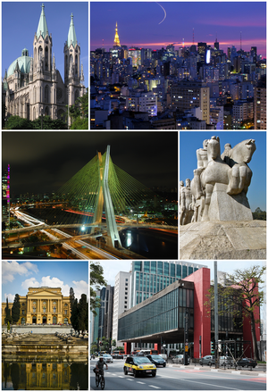

Fundada em 1554 por padres jesuítas, a cidade é mundialmente conhecida e exerce significativa influência nacional e internacional, seja do ponto de vista cultural, econômico ou político. Conta com importantes monumentos, parques e museus, como o Memorial da América Latina, o Museu da Língua Portuguesa, o Museu do Ipiranga, o MASP, o Parque Ibirapuera, o Jardim Botânico de São Paulo e a avenida Paulista, e eventos de grande repercussão, como a Bienal Internacional de Arte, o Grande Prêmio do Brasil de Fórmula 1, a São Paulo Fashion Week e a Parada do Orgulho LGBTQIA+.
 Link Para a página do Google